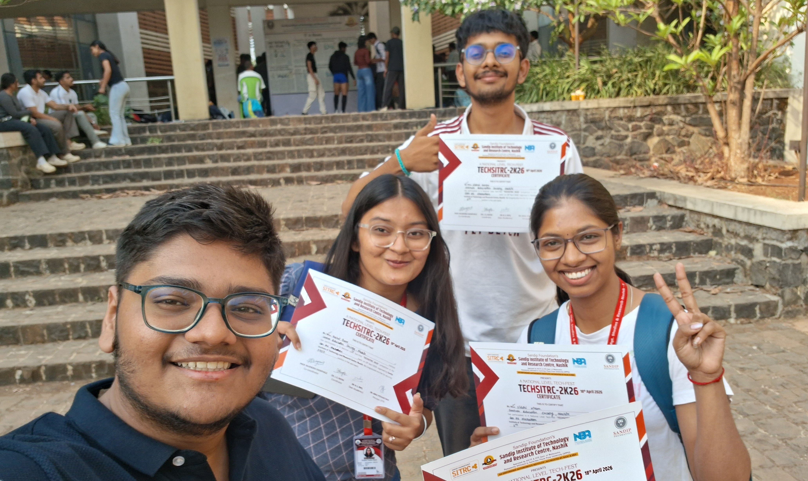
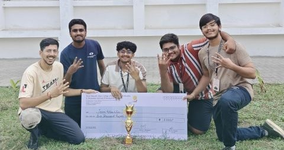
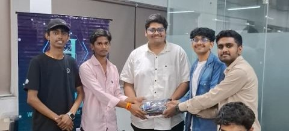
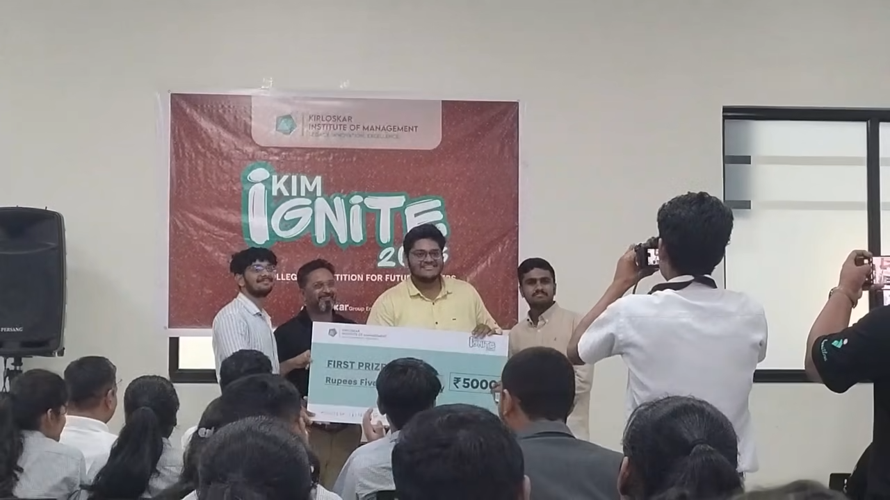
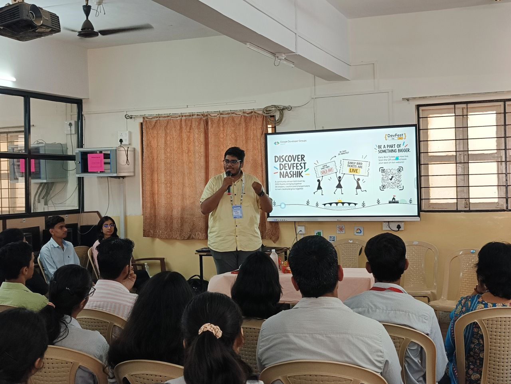
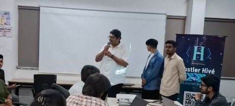
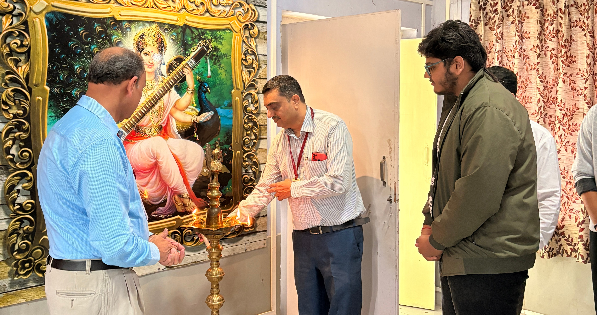
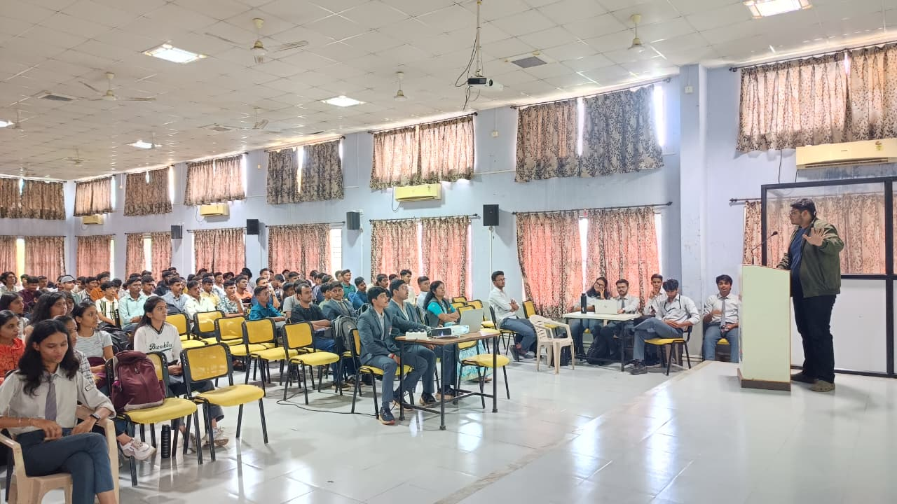
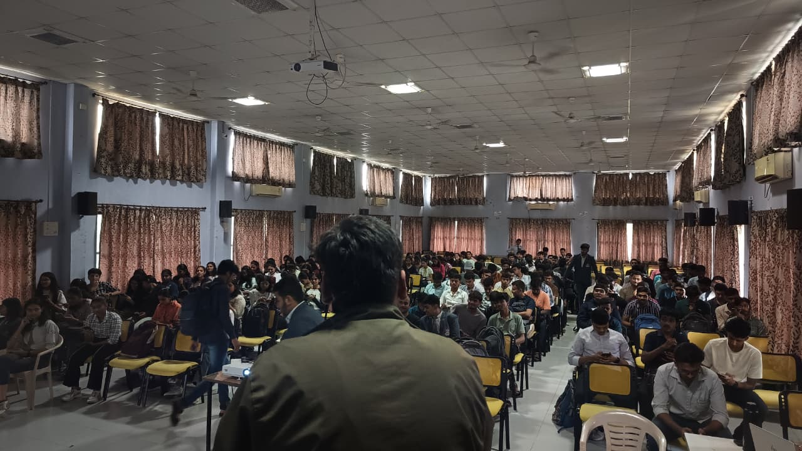

Spandan Ghodke
I design neural architectures and data pipelines that bridge deep learning research with production reality — multispectral satellite super-resolution, clinical diagnostics with SHAP interpretability, and low-latency inference backends. Currently a Student Intern at ABB India and engineering AI & Data Science at SPPU.
Deployed Systems & Models
EVAL // INFERENCE · BENCHMARKS · ARCHITECTURES
-
01
Beyond Resolutions
REMOTE SENSING SUPER-RESOLUTION WORKSTATION · SIH PS-26142
RCAN v2 32.62 dB PSNR 0.873 SSIM 10m → 2.5m Ground ResolutionAn end-to-end workstation for 4× multispectral satellite super-resolution. A four-band RCAN v2 takes 10 m Sentinel-2 imagery to 2.5 m effective resolution, then SegFormer segmentation and a reference-based quality engine validate that the output holds up scientifically.
-
02
SymptoSense
INTERPRETABLE CLINICAL RISK DIAGNOSTICS · MULTI-TARGET
Ensemble Classifier SHAP Interpretability 3 Target DiseasesA diagnostic platform for heart disease, diabetes, and tumour risk. Clinical inputs become printable, medical-style reports with feature importance and patient-level comparisons — not just a probability.
-
03
Extrovert
REAL-TIME DISTRIBUTED SOCIAL BACKEND · EVENT-DRIVEN
FastAPI Engine WebSockets Async JWT RBACA professional social network built from scratch: JWT authentication, profiles, follows, personalised feeds, and real-time messaging over WebSockets, running on FastAPI and PostgreSQL.
-
04
PoolIQ
OPTIMIZATION & DISPATCH ENGINE · SHARED TRANSIT
OR-Tools Solver 117 Tests Passing 5 Dispatch StrategiesOne neutral API for shared rides. PoolIQ matches routes across different apps, splits fares transparently, and benchmarks five dispatch strategies side by side — from scipy's Hungarian solver to Google OR-Tools.
Model Philosophy & Engineering
PARADIGM // DATA PIPELINES · INDUCTIVE BIAS · PROD
I'm an Artificial Intelligence & Data Science engineering student at Gokhale Education Society's R. H. Sapat College of Engineering, SPPU, graduating in 2028.
My work sits between machine learning and the engineering required to ship it: data pipelines, model evaluation, APIs, and interfaces people can actually use. I care about models that explain themselves and systems that hold up outside a notebook.
Currently I'm a Student Intern at ABB India through the TRI-WIN College Collaboration Program, after a data science internship at Sumago Infotech. I led GDG on Campus at GES College for the 2025–26 tenure, now advise the chapter, serve on the GDG Nashik core team, and serve as International Services Director at Rotaract Club of Nashik Nine Hills.
I've won 30+ hackathons. The pattern is usually the same: scope hard, build the smallest real thing, and finish.
- Based
- Nashik, Maharashtra
- Focus
- ML systems, GenAI, agents
- Studying
- B.E. AI & Data Science
- Status
- Open to internships
Applied ML & Industry Practice
TENURE // INDUSTRIAL AUTOMATION · PREDICTIVE ENGINES
-
Student Intern, Data Science & ML
Sep 2026 — Now
ABB India
Data science and machine learning in an industrial automation context through the TRI-WIN College Collaboration Program.
-
Data Scientist Trainee
Jun 2026 — Sep 2026
Sumago Infotech
Data science and engineering work at an IT services and consulting company in Nashik.


Community & Technical Leadership
ECOSYSTEM // DEVELOPER ECOSYSTEMS · SPEAKER OPS
-
Core Team Member
Jan 2026 — Now
Google Developer Group Nashik
Core team member and technical speaker; delivered 2 sessions, including Build with AI in October 2026.
-
International Services Director
May 2026 — Now
Rotaract Club of Nashik Nine Hills
Lead the club's international services portfolio.
-
GDG on Campus GESCOE
Jan 2025 — Now
-
Oct 2026 — Now
Advisor
Advising the next team.
-
Aug 2025 — Oct 2026
GDG on Campus Organizer
Led the chapter for the 2025–26 tenure; organized 10+ events.
-
Jan 2025 — Aug 2025
Technical Team Co-Lead
Co-led the chapter's technical team.
-


Foundations & Theory
ACADEMIC // MATHEMATICS · DSA · COMPILER & ARCH
-
B.E. in Artificial Intelligence & Data Science Engineering
2024 — 2028
Savitribai Phule Pune University · R. H. Sapat College of Engineering and Management, Nashik
Expected graduation 2028.
-
Secondary Education (CBSE)
2022 — 2024
Nashik Cambridge School, Nashik
Completed secondary education under the CBSE board.


Competitive Record & Benchmarks
TRACK RECORD // 30+ PODIUM FINISHES · TALKS · HACKATHONS




30+
Hackathon Wins


2
Talks & Sessions



10+
Events Organized
Core Stack & ML Ops Infrastructure
TOOLCHAIN // FRAMEWORKS · PIPELINES · COMPUTE
01 // Deep Learning & Models
02 // Data Science & Analysis
03 // GenAI & Agentic Workflows
04 // Inference & Model Serving
05 // Core Languages & DSA
06 // ML Ops & Infrastructure
Transmission & Collaboration
COMMS // RESEARCH COLLABS · INTERNSHIPS · INVITATIONS
I'm open to ML, data science, and GenAI internships, research collaborations, and problems worth staying up for.
spandanghodke2006@gmail.com